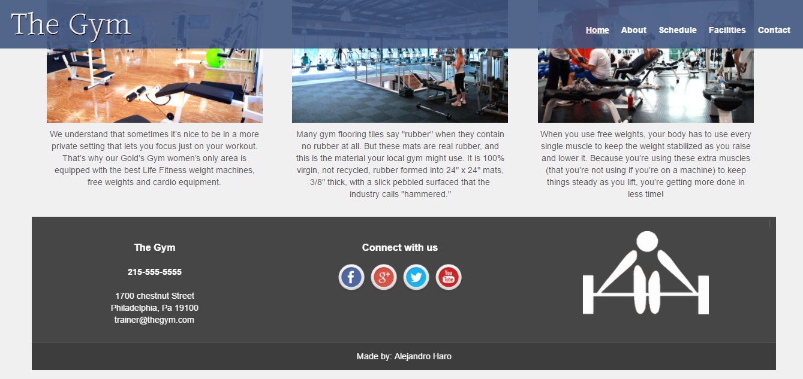

About
My name is Alejandro Haro, I am a Mechatronics Engineering student at the University of Waterloo.
I was born in Ecuador and moved to Canada in 2016 sponsored by the Ecuadorian government that granted
me with a full-ride scholarship to study in one of the best universities worldwide. I am an avid explorer
of life whose main purpose is to leave big leaps after fullfilling each one of my goals and dreams.
My passion for computers and machines has motivated me to seek for the improvement of people's lives through
the use of technology.
Projects
EV3 LEGO Mindstorms Project
I worked along with two colleagues completing one task of the Trash Trek Lego, which is a challenge of the First Lego League Competition.
By using the Mindstorms EV3 software, the robot was programmed in order to complete 6 missions in less than 3 minutes. I demonstrated my
leadership skills by creating a document so that every group member could contribute with ideas related to the mechanical design and code.
As a result of the organization that I planned, the robot completed all the missions successfully during the presentation in a short time.
Moreover, we had the remaining time to program 2 more missions which allowed us to achieve exactly 145 points which was the highest score among 2 Engineering sections.
Applying teamwork skills, I created a respectful environment for the exchange of ideas in which everyone felt comfortable sharing their opinions to improve the robot’s efficiency.

ALCOPESA S.A - Production Control Program (C++)
As part of my summer 2017 internship working as a Production Assistant in a liquors company called ALCOPESA S.A,
I developed a program using C++ that let the Production Engineers enter data to calculate the quality percentage after producing
approximately 10,000 bottles of a certain liquor everyday.In addition, I built a function that let the user know the efficiency of each station
that controls the quality of the final product. Moreover, the percentage of defects is displayed when the program is running. The defects section
was divided into 3 parts: Minor defects, major defects and critical defects.
This experience was benefitial for my personal growth as a proffesional since I had the valuable opportunity to understand the entire production process within a company. Furthermore, I was able to apply
my programming knowledge to create an useful program in terms of data analysis. It is worth pointing out that I taught myself C++ from
scratch during this internship.


Monograph: Obesity among children
On March, 2015 at C.E.C High School. I worked on my Grade 12 project with a colleague to study the public health problem of obesity among children in my school. As part of my project, I had to collect data and determine the rate of obesity among children in order to suggest solutions to the authorities to tackle this problem.
I demonstrated my social responsibility by finding the most adequate ways to implement a healthier diet within my high school.
Ultimately, my partner and I showed a social responsible behaviour due to the fact that we acted for the benefit of society, specifically for the children. For this reason, I could say that I am a self-starter and social responsible student, who is able to show his assertive side by taking the initiative in order to propose
suggestions based on my ethics which is quite convenient for any company in order to always stay on top of things.
Gym sample website
On March, 2015 at C.E.C High School. I worked on my Grade 12 project with a colleague to study the public health problem of obesity among children in my school. As part of my project, I had to collect data and determine the rate of obesity among children in order to suggest solutions to the authorities to tackle this problem.
I demonstrated my social responsibility by finding the most adequate ways to implement a healthier diet within my high school.
Ultimately, my partner and I showed a social responsible behaviour due to the fact that we acted for the benefit of society, specifically for the children. For this reason, I could say that I am a self-starter and social responsible student, who is able to show his assertive side by taking the initiative in order to propose
suggestions based on my ethics which is quite convenient for any company in order to always stay on top of things.

Resumé
Skills Spotlight
I worked along with two colleagues completing one task of the Trash Trek Lego, which is a challenge of the First Lego League Competition.
By using the Mindstorms EV3 software, the robot was programmed in order to complete 6 missions in less than 3 minutes. I demonstrated my
leadership skills by creating a document so that every group member could contribute with ideas related to the mechanical design and code.
As a result of the organization that I planned, the robot completed all the missions successfully during the presentation in a short time.
Moreover, we had the remaining time to program 2 more missions which allowed us to achieve exactly 145 points which was the highest score among 2 Engineering sections.
Applying teamwork skills, I created a respectful environment for the exchange of ideas in which everyone felt comfortable sharing their opinions to improve the robot’s efficiency.